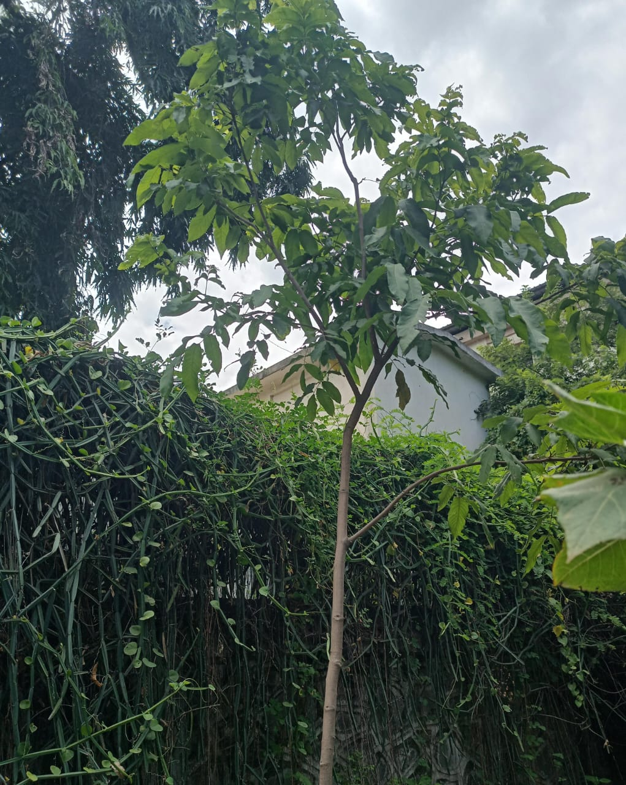

Ritha

Plant Information
Botanical Name:
Sapindus mukorossi (Gaertn)
Common Name:
Ritha Soapnut
Family:
Sapindaceae
Description
A medium to large tree with green leaves and round fruits
containing natural saponins.
Medicinal Uses
-
Used for cleaning hair and skin ; traditionally used in some herbal preparation.
- Used in traditionally medicine for rheumatic pain and joint discomfort.
- Fruit extracts have been used traditionally for digestive complaints.